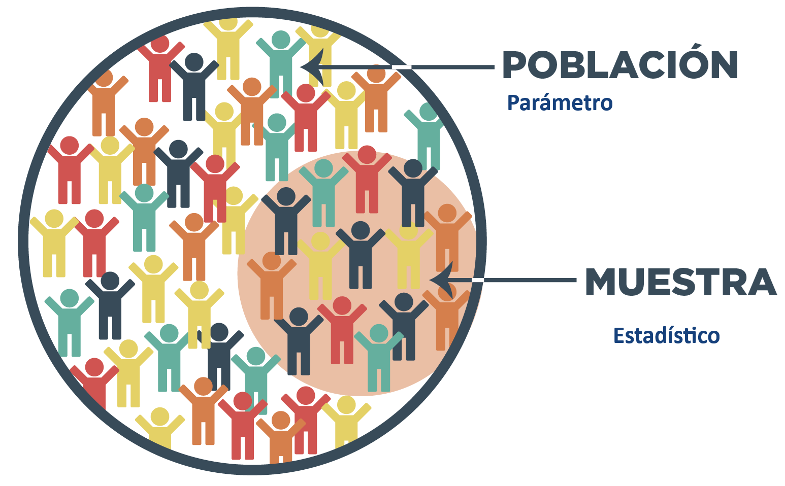
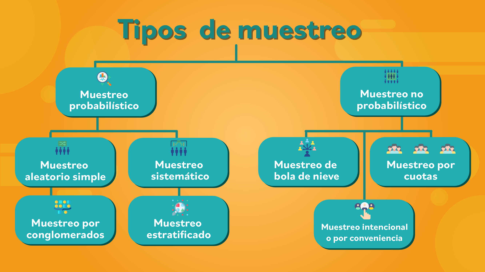
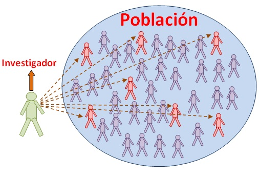
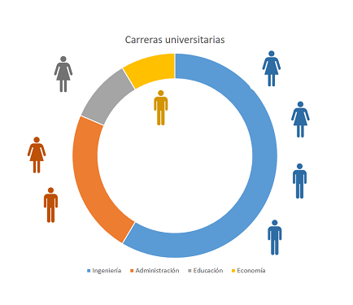
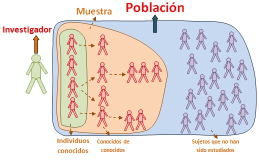

Población: conjunto de elementos sobre los que queremos hacer afirmaciones.
Muestra: subconjunto de la población que se extrae para ser estudiado
Inferencia estadística
Obtener conclusiones de la población a partir de la muestra, esto ocurre cuando es imposible censar toda la población.
El muestreo se realiza para obtener información acerca de los parámetros desconocidos de la población, por medio de un experimento que permite observar o medir las características de la población, de las cuáles se tiene incertidumbre.
Por qué una muestra Imposibilidad o costo excesivo de realizar un censo en que se mide toda la población
Describir la muestra: Estadística Descriptiva
Obtener conclusiones de la población a partir de la muestra: Inferencia Estadística.
Parámetro: número derivado del estudio de una variable estadística de toda una población.
Estadístico: Medida de resumen numérica que se calcula a partir de la muestra
Cómo elegir el tamaño de la muestra
Algunos Criterios Generales son; ¿Qué se va a medir? ¿Qué se quiere determinar? Nivel máximo de error admisible Nivel de confianza con qué se quiere obtener la estimación del tamaño muestral Variabilidad de las características a medir
Se dice que las variables aleatorias X1, X2, . . . , Xn forman una muestra aleatoria simple de tamaño n si:
Es decir las Xi son independientes e idénticamente distribuidas (iid) \[𝑋_𝑖\sim N(0,\sigma ^2)\]

Frecuentemente usado como primera aproximación Se controla la probabilidad de seleccionar un determinado individuo Permite estudiar objetivamente la confianza de las generalizaciones hacia la población objetivo.
Muestreo por convenciencia
Muestreo por juicio Muestreo por cuota Muestreo tipo “bola de nieve”
(snowball)
Muestreo aleatorio simple Muestreo sistemático Muestreo estratificado Muestreo por grupos
Los elementos de la muestra se eligen por estar en el lugar o en el momento adecuado para la investigación. El criterio de selección (lugar, tiempo y demás) es completamente dependiente del investigador, sin reglas predeterminadas.
Ejemplos: - Encuestas en la calle - Encuestas a estudiantes - Encuestas web
Se selecciona de acuerdo a alguna característica especifica del encuestado juzgada por el encuestador - Muestreo por conveniencia - Clientes / Consumidores de un cierto tipo - Expertos en un tema o aspecto de la organización - Personajes “líderes de opinión”

Separa la población de acuerdo a variables de control: edad, sexo, raza, nivel socio-económico A cada subgrupo se le asigna una proporción de muestreo, típicamente un % de la población

Se selecciona un grupo inicial Los nuevos encuestados se seleccionan en base a las referencias de los encuestados anteriores, explotando sus “redes sociales” . Muy utilizado en ciencias sociales, cuando la característica a estudiar es rara o escasa y cuando es difícil conseguir encuestados.
